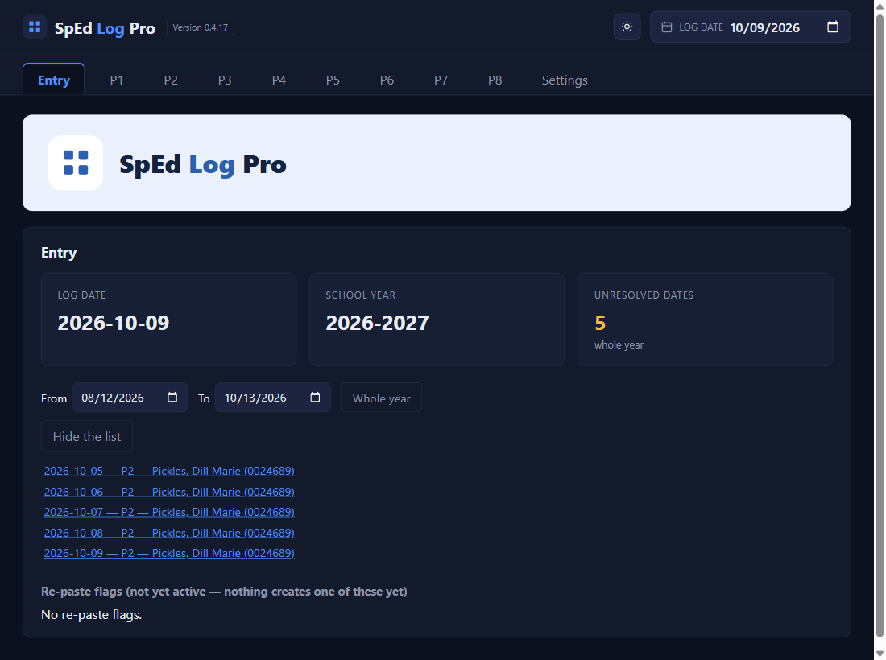
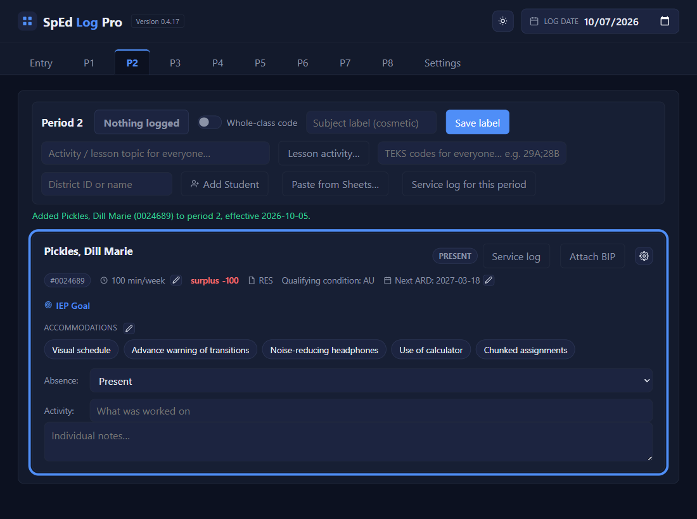

Every day
Catch up on missed days
⏱ About 3 minutes🔁 Whenever the number isn't 0You need: nothing
Why: the service log can't be copied while any day in it is empty. The Entry tab counts every school day, through today, that still has nothing saved for a student, and takes you straight to each one.
1
On the Entry tab, click the Unresolved dates number
It opens the list: one line per student per day, with the period.

2
Click a line
The app sets the Log date to that day, opens that period, and outlines the student's card in blue for a few seconds. The click itself saves nothing.

3
Fill in the day and Save
The activity and accommodations if they were there, or an absence code if they weren't. Several students missing the same day? Type the class activity at the top once and Save: they all clear together.
4
Done? Set the Log date back to today
While you've picked a date yourself, the app leaves it alone, so put it back when you've caught up. The From and To boxes narrow the list to a range; Whole year resets it.
✓ You'll know it worked
- Back on Entry, the number has dropped.
- With nothing left:
Nothing unresolved in this range.
✕ Avoid these
- Logging today's class on a past date. Check the Log date before you start typing.
- A long list for a new student. Their start date may be too early: they owe days from that date on.
⚠ If you see this
The Log date isn't todayNormal while catching up. Change it back when you're done.